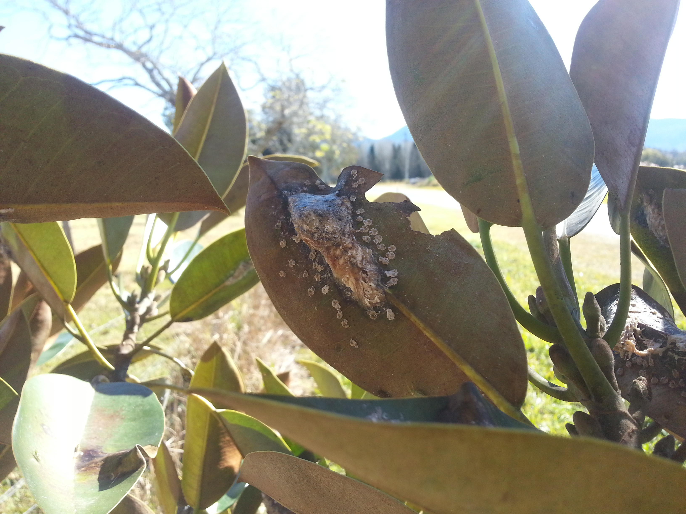
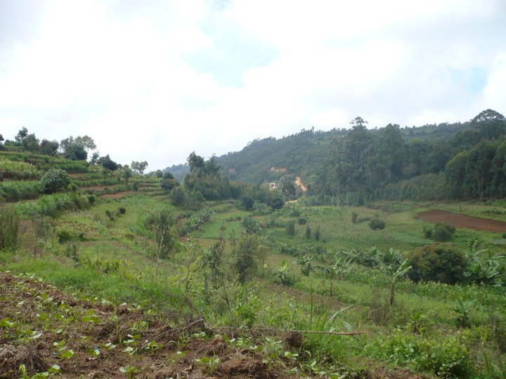

Research
Insect diversity and host specificity
“How many species are there on earth?” is one of the most debated questions in biology. Estimates of regional and global insect (and other arthropod) diversities often depend on scaling up from ecological patterns determined in detailed smaller scale studies. A key “multiplier” is the host specificity shown by different insect taxa (Erwin 1982; May 1988; May 1992; Hamilton et al. 2010). However, detailed studies of host specificity have been made for relatively few insect groups and host specificity may vary greatly between taxa. Moreover, there is a strong bias in empirical studies towards focus on insect herbivores, and especially on beetles (Coleoptera) and moths (Lepidoptera). Consequently, there are several detailed studies for particular groups of insect herbivores (Novotny and Basset 2005; Dyer et al. 2007; Hamilton et al. 2010), but far fewer for their parasitoid enemies (Smith et al. 2006).
Here, I am focussing on the Australian fig psylloids and their parasitoids. Very few studies have been interested in accounting for the diversity of parasitoids associated with Homotomidae and I want to fill this gap in Eastern Australia.
Insect and endosymbionts
co-evolution hosts and endosymbionts
Insects feeding on sap typically rely on primary (P) endosymbionts for missing nutrients, and may also harbour secondary (S) endosymbionts. Many studies have focussed on host / endosymbiont co-evolution at the species level, but few have explored associations between populations, especially by comparing phylogeographic patterns of all harboured endosymbionts.
Obligate or primary (P-) endosymbionts are required by their insects hosts and are frequently associated with key insect metabolic processes, especially nutrition and reproduction (Zientz et al. 2004; Dale and Moran 2006a; Pais et al. 2008; Douglas 2009; Sloan and Moran 2012a). They are maternally transmitted and experience intimate relationships with their hosts, often existing in specialised cellular structures. Several studies have found evidence for long-term cospeciation of P-endosymbionts and their insect hosts (Aksoy et al. 1997; Spaulding and von Dohlen 1998a; Thao, Moran, et al. 2000; Sauer et al. 2000; Thao and Baumann 2004b; Baumann et al. 2004). Insects may also harbour secondary (S-) endosymbionts that are facultative (i.e. not always required by hosts) and may not be present in every individual of a given species (Tsuchida et al. 2002; Hansen et al. 2007). Phylogenies of S-endosymbionts and their hosts are usually incongruent and this is consistent with the fact that they may be frequently transmitted horizontally (Thao, Clark, et al. 2000; Russell et al. 2003; Moran et al. 2008; Toju et al. 2013).
I focus on Australian fig psylloids, little-studied relatives of the more familiar psyllids, using sequences from several insect and symbiont genes to study variability, host-specificity and co-diversification.
Endosymbiont diversity and density in different host populations
Associations between insect host and bacterial symbiont are common in nature. Depending on the bacteria harboured, they may range from beneficial to detrimental. However, interactions between host, bacteria and environment may affect the symbiont role on its host biology. It is crucial to study the structuration of the host in order to understand links between populations, but the hidden bacterial diversity and density is not to be forgotten.
Here, I focus on the bacterial community associated with Mycopsylla fici and compare the bacterial diversity and density across populations.
Insect gene flow
Population genetics
Human activities are playing an increasing role in biological invasions. The homogenization of the environment through agriculture and the choice of alien species planted in urban areas are increasing the ranges of many plant species. This may in turn provide new opportunities for their associated insects, and even insects with limited dispersal abilities may reach new habitats. Mycopsylla fici is a small sap-feeding insect found specifically on the Moreton Bay fig (Ficus macrophylla). Outbreak of these psylloids can cause complete defoliation of their host trees and have negative impacts on animals relying on this tree for food and shelter. There are two forms of Moreton Bay fig, one on the mainland of Australia and another on Lord Howe Island, a volcanic island located 600 km offshore. Due to human activities, F. macrophylla is now also present outside its natural range in various other parts of Australia, as well as in New Zealand, Europe and America (including Hawaii). Psylloids are now found throughout Australia where Moreton Bay figs occur, and in New Zealand. Lord Howe Island and New Zealand populations are interesting as they represent two different times of colonisation; Lord Howe Island could have been colonised by the psylloids a very long time ago (up to millennia) while New Zealand has clearly only been colonised very recently (since 1995). Using microsatellites specifically developed for the psylloids, I am addressing questions regarding gene flow between populations, colonisation events and the genetic diversity of the psylloids on each island.
Dispersal
As part of my master degree, I did a research project with Pascal Campagne and Bruno Le Ru at the ICIPE in Kenya.
Cereals, and maize especially, account for 80% of the human consumption and are considered a staple food in Africa. Numerous pests may cause damages to these crops and management strategies are developed in order to limit yield losses. Busseola fusca (Fuller) (Lepidoptera: Noctuidae) is one of the major pests of Maize and Sorghum in sub-Saharan Africa. At the time of this project, Bt Maize was supposed to be released soon in Kenya (2014). At the same time, Busseola fusca has developed a resistance against Bt maize in 2006 in South Africa. As a consequence, gene flow studies provide valuable information on this species in order to determine which factors may be involved in the development of this resistance. The main strategy to delay the development of the resistance in insect populations is the High Dose/Refuge strategy.
Our work had two goals. First, we aimed to characterize flight capacity of males with or without pheromone, mated and unmated females of B. fusca using tethered flight experiment. Secondly, we tested whether there could be a preferential mating between relatives as compared to non-relative mates.
Insect nutrition...
...in relation to their immune system
In 2009, under the supervision of Fleur Ponton and Steve Simpson, I undertook a research project on the impact of protein and carbohydrate ratio and concentration on the maintenance of the immune system in the flour beetle, Tenebrio molitor.
...for human consumption
In 2012, as part of my master in Geography, I spent six months working with Frederic Marion-Poll (INRA) and Antoine Hubert (Ynsect) on the first steps of the elaboration of a diet for insects for animal and human consumption.
The increase in human population will have to be followed with an increase in the agriculture production in the second half of the XXIst century. We will need to look for alternatives to our actual food production models. Insects are a common food source in many countries and have biological and nutritive characteristics that are extremely interesting. As a result, considering insect protein as an alternate food or feed sources has a great potential for the future of agriculture. However, the diet given to the insects should be carefully chosen to avoid creating usage conflicts by using products already consumed by human and animal. I worked on identifying, locating and quantifying industry and restaurant wastes and to start feeding trials using those wastes as a diet for Tenebrio molitor larvae.